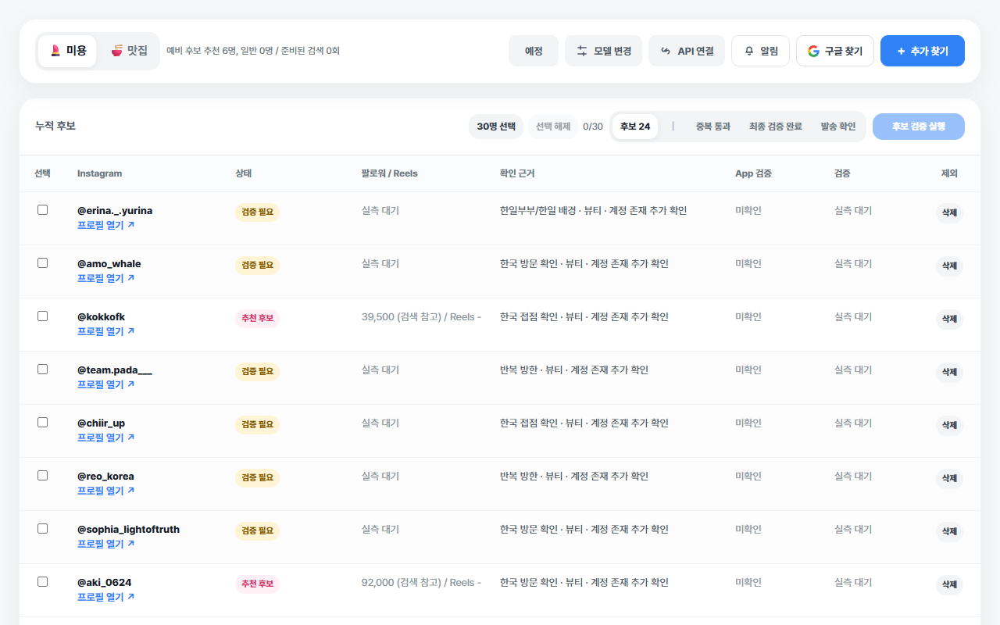
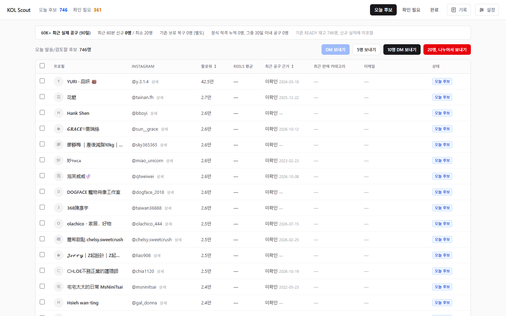
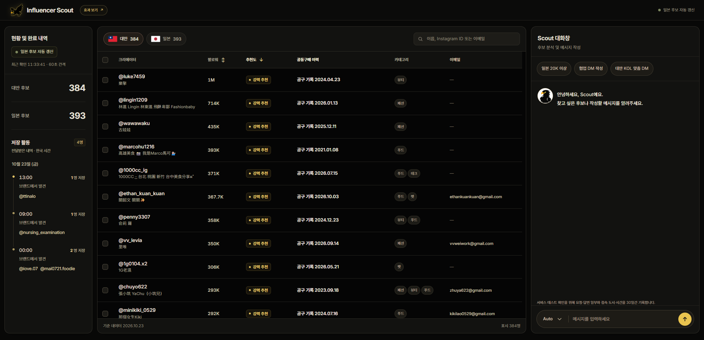

02 WEB PROJECT · AI AUTOMATION
KOL Scout
인플루언서 발굴부터 협업 제안까지 연결한 업무 자동화 도구
- 프로젝트
- 업무 자동화(AX) & 인플루언서 시딩
- 담당 역할
- 서비스 기획 · 바이브코딩 · 시딩 운영
- 제작 기간
- 2026.06 ~ 2026.09

수익화를 위한 인플루언서 시딩
2026년 6월경에는 인스타그램 카드뉴스 자동화 프로젝트를 마친 뒤, 여러 작은 에이전트를 만들어 보며 바이브코딩에 익숙해지고 있었다. 수익을 낼 방법을 찾으며 작은 실험을 이어 가던 중, GPT의 제안으로 인플루언서 시딩을 시작했다. 방한 일본인 인플루언서와 한국 음식점·시술 업체를 연결하는 재택 프리랜서 일이었다.
처음 이틀은 자동화 도구 없이 GPT 채팅으로 후보를 찾고 직접 연락했다. 이 과정에서 중복 후보를 걸러 내고, 연락한 사람을 관리하며, 메시지를 일일이 복사해 보내는 일이 번거로워 이 과정을 자동화하기로 했다.
시딩 업무의 자동화
먼저 내가 실제로 일하는 순서에 맞춰 필요한 기능을 정리했다. 크게 후보 탐색·메시지 작성·발송의 세 가지로 나누고,
이전 Instagram Card Agent ↗ 프로젝트에서 경험한 모듈화 방식을 적용했다.
- 01
후보 탐색 자동화
도구 개발에는 Codex를 쓰고, 반복적인 후보 탐색에는 Exa·Tavily와 무료 AI를 활용했다. 개발과 검색에 필요한 도구를 나눠 연결하면서, 기능이 작동하는지뿐 아니라 매일 반복해서 사용할 때의 비용과 운영 방식도 함께 고려하게 됐다.
- 02
제안 메시지 개인화
후보별 정보를 바탕으로 협업 제안 메시지를 작성하는 에이전트를 별도로 만들었다. 연락할 사람마다 제안 문구를 직접 작성하던 과정을 줄였다.
- 03
계정별 발송 자동화
한 계정에서 DM을 많이 보내면 이용 제한을 겪었다. 하루 연락량을 유지하기 위해 여러 Instagram 계정을 나눠 운영했다. Chrome 프로필로 계정별 로그인 상태를 구분하고, Playwright와 OpenCode로 발송을 자동화했다.
처리한 후보와 연락 내역은 데이터베이스(Supabase)에 저장했다. 세 기능을 나눠 개발하고 각각 별도로 QA를 진행하니, 완성도를 빠르게 높일 수 있었다. 이 작업은 하루 만에 마쳤고, 곧바로 실제 업무에 사용하기 시작했다.
첫 수익
처음에는 나 혼자 쓰는 도구라 탭이 많았다. 후보 탐색, 메시지 작성, 발송이 전부 별도 탭으로 나뉘어 있었다. 필요한 기능을 붙여 가며 썼고, 실제로 일하는 시간은 오전 10분, 오후 1시간, 저녁 30분 정도였다.
그렇게 첫 달에 약 50~60만 원을 벌었다. 많지는 않았지만, 반년 동안 AI와 작업하며 수익화를 노린 끝에 얻은 첫 수익이었다. 작게나마 수익이 생겼다는 게 반가웠고 감격스러웠다. 내가 해 보고 싶었던 건 AI를 활용해서 나 혼자서는 불가능하던 시장에 도전하고, 수익까지 내 보는 것이었다. 그걸 처음으로 성공해 본 시점이었다. 지금도 AI의 도움 없이는 혼자 수익을 낼 수 없는 영역이다.
또한 개발 → 시딩 → 번역 → 자동화 툴까지. 이 모든 것을 매끄럽게 연결할 수 있었던 건 그동안 만들어 본 것들이 있었기 때문이다.
그 뒤에는 포트폴리오에 올리지 않은 수많은 아류작들이 있었다.

새로운 시장 - 대만 공동구매
일본 시딩은 방한·한국 거주자만 대상이라 새 후보가 줄었고, 낮은 광고 단가로 수익도 감소했다. 그때 자체 제작한 기능성 신발을 대만에서 공동구매로 판매하자는 제안을 받았다. 이번에는 한국 방문자가 아닌 제품을 함께 판매할 인플루언서를 찾아야 했기에, 후보 선정 기준과 제안 방식도 달라졌다.
첫날에는 모든 과정을 수동으로 진행하며 불편한 점과 자동화할 일을 기록했다. 다음 날 이를 바탕으로 새 도구를 세 부분으로 나눠 만들고, 각각 검증한 뒤 연결했다. 셋째 날부터 실제 업무에 적용했다.
밤에는 오래된 노트북에서 OpenCode로 후보를 탐색하고, 낮에는 아침 20명·점심 20명·저녁 40명씩 하루 80명에게 연락했다. 그 결과 대만에서 첫 달 공동구매 9건을 성사시키며 수익을 냈다. 다만 팔로워 3만 명 이상이면서 공동구매 의사가 있는 후보는 한정적이어서, 지속적으로 연락할 수 있는 대상 규모도 함께 살펴야 했다.

최종 개선
V3에서는 다른 사람도 처음 들어와 사용할 수 있도록 편의성을 고려했다. 내가 알고 쓰던 작업 순서를 화면에 드러내고, 후보 검토부터 메시지 준비까지 자연스럽게 이어지도록 정리했다. 업데이트 이후에는 나 역시 이전보다 훨씬 편하게 쓰고 있다.
- 01
일본·대만 후보 통합
따로 관리하던 일본과 대만 후보를 한 화면에 모으고, 국가 탭으로 전환할 수 있게 했다. 왼쪽에는 현황과 저장 내역, 가운데에는 후보 목록, 오른쪽에는 대화창을 배치해 화면을 오가는 일을 줄였다.
- 02
후보 정보 정리와 검색·정렬
일본은 방한 관련 이력, 대만은 공동구매 이력을 보여 주고, 외국어로 된 근거는 한국어로 요약했다. 팔로워와 추천도로 정렬하거나 이름·계정·이메일로 검색할 수 있도록 해, 필요한 후보를 찾아 검토하기 쉽게 만들었다.
- 03
후보 선택과 연결된 메시지 작성
후보를 선택하면 해당 정보를 바탕으로 대화창에서 협업 메시지를 준비하도록 연결했다. 후보 정보를 다른 채팅창에 다시 옮겨 적는 일을 줄이고, 일본어·번체 중국어 원문과 한국어 번역을 함께 받을 수 있게 했다. 예시 요청 버튼도 넣어 처음 쓰는 사람도 어떤 작업을 요청할 수 있는지 알 수 있도록 했다.
- 04
신규 후보 알림과 게이미피케이션
새 후보가 들어오면 숫자가 늘어나면서 독수리가 날아오는 효과를 넣었다. 저장된 후보와 시간도 활동 내역에 표시해, 무엇이 새로 추가됐는지 확인할 수 있게 했다. 매시간 들어와 후보가 몇 명이나 늘었는지 보는 재미도 더하고 싶었다.
이 프로젝트는 국가와 시딩 목적에 맞춰 확장할 수 있는 구조다. 특정 국가의 공동구매 계정이나 다른 나라를 방문할 시그널이 있는 KOL을 찾는 데 기존 모듈을 활용할 수 있다. 예를 들어 한국을 방문할 예정인 몽골 KOL이나, 한국에서 식품 공동구매를 제안할 계정을 찾는 식이다. 새로운 업무가 생기면 필요한 탐색 모듈을 추가하거나 수정하고, 기존 메시지 작성·발송 기능과 연결해 활용할 수 있다.

PM으로 해 오던 일을 개발과 운영까지
- 문제 정의
불편했던 일을 필요한 기능으로
PM으로서 요구사항을 정리하고 사용자가 일하는 순서를 그리는 일은 익숙했다. 이번에는 내가 사용자였기에, 실제로 막히는 지점을 바로 기능으로 옮길 수 있었다. 같은 계정이 반복되면 기존 목록을 확인하게 하고, 계정이 여러 개면 로그인 상태를 나누는 식이었다. 문제를 쪼개고 모아가는 과정에는 해결할 수 있을 거란 기대감으로 약간의 즐거움도 있었다.
- AI Governance
무엇을 맡기고, 무엇을 확인할 것인가
AI가 후보를 찾고 협업 메시지를 작성하더라도, 그 결과를 그대로 사용할 수 있는 것은 아니었다. 후보의 근거가 부족하거나 메시지에 확인되지 않은 내용이 포함되는 경우도 있었다. AI에 맡길 업무와 직접 확인할 부분을 구분하고, 오류가 생기면 해당 단계에서 바로잡을 수 있도록 작업 흐름을 나눴다. AI를 더 많이 활용할수록 업무 범위와 검수 기준, 예외 처리 방식을 명확히 정하는 일이 중요했다.
AI로 도구를 만들고 일을 맡기는 데는 전보다 익숙해졌다. 그래도 AI가 점점 더 많은 일을 해내는 것을 보면 무섭기도 하다. 내가 이렇게 만드는 일이 앞으로도 무슨 의미가 있을지 불안한 마음도 있다.
그래서 오히려 변화가 조금 늦게 찾아올 것에도 관심이 생겼다. 내가 생각한 것은 사람 사이의 관계다. 인맥을 무작정 많이 쌓겠다는 뜻은 아니다. 언어의 장벽이 낮아지는 만큼 다른 나라의 사람들과도 함께 일하고, 그런 관계를 오래 이어 가고 싶다.